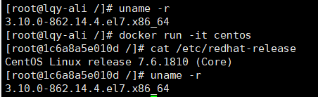
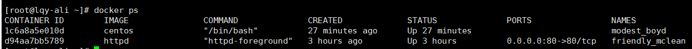
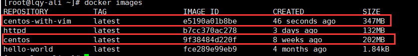
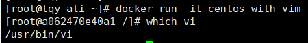
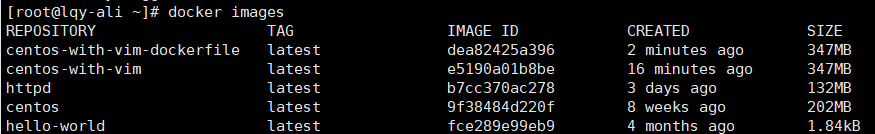
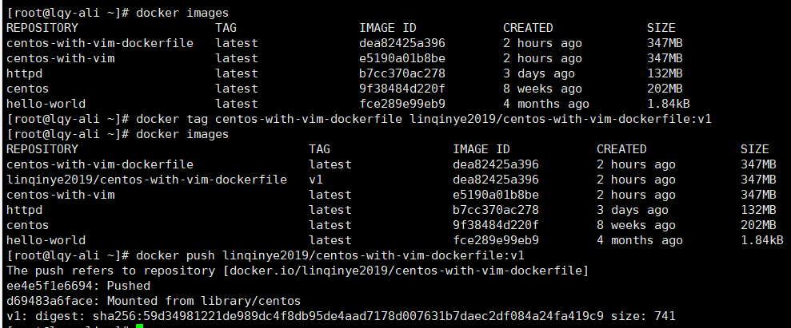
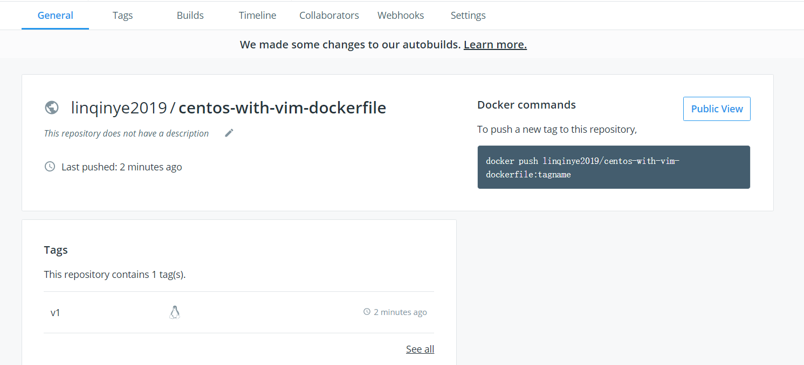

镜像是Docker容器的基石，容器是镜像的运行实例，有了镜像才能启动容器。
最小的镜像，hello-world
Dockerfile内容
FROM scratch 从0开始构建
COPY hello / 将文件“hello”复制到镜像的根目录
CMD ["/hello"] 容器启动时，执行/hello
base镜像
base镜像：镜像能提供一个基本的操作系统环境，用户可以根据需要安装和配置软件base镜像两层含义：
1.不依赖其他镜像，从scratch构建
2.其他镜像可以以之为基础进行扩展
Linux镜像上层提供各自的rootfs，底层共用Docker Host的kernel
1.base镜像只是在用户空间与发行版一致，kernel版本与发行版不同

容器只能使用Host的kernel版本，并且不能修改
如果容器对kernel版本有要求，则不建议用容器
镜像的分层结构
Docker支持通过扩展现有镜像，创建新的镜像。
新镜像是从base镜像一层一层叠加生成
最大的好处是：共享资源
可写的容器层
当容器启动时，一个新的可写层被加载到镜像顶部。
只有容器层可写，容器层之下叫镜像层，只读。
容器Copy-on-Write特性：只有当需要修改时才复制一份数据
容器层保存的是镜像变化的部分，不会对镜像本身进行任何修改,修改会被限制在单个容器内,镜像可以被多个容器共享。
构建镜像
Docker提供两种构建镜像的方法：
docker commit命令（不提倡）
- 运行容器
- 修改容器
- 将容器保存为新镜像
1.运行容器
[root@lqy-ali /]# docker run -it centos
[root@1c6a8a5e010d /]#
-it参数的作用：以交互模式进入容器，并打开终端，1c6a8a5e010d是容器内部ID。
2.vim安装
[root@1c6a8a5e010d /]# vim
bash: vim: command not found
安装Vim
[root@1c6a8a5e010d /]# yum install -y vim
Loaded plugins: fastestmirror, ovl
Determining fastest mirrors
* base: mirrors.cn99.com
* extras: mirrors.cn99.com
* updates: mirrors.cn99.com
3.保存为新镜像
新窗口查看当前运行容器

modest_boyd是Docker为容器随机分配的名字
执行docker commit命令将容器保存为镜像
[root@lqy-ali ~]# docker commit modest_boyd centos-with-vim
sha256:e5190a01b8bed8ca4dc715bea7bc2fb2a0daf15a923563bd12c05f636ab448b3
新镜像命名centos-with-vim

4.从新镜像启动容器，验证vi可以使用

不提倡原因
1.手工创建镜像的方式，容易出错，效率低且可重复性弱
2.无法对镜像进行审计，存在安全隐患
Dockerfile构建文件（推荐）
记录了镜像构建的所有步骤
[root@lqy-ali ~]# pwd
/root
[root@lqy-ali ~]# touch Dockderfile
[root@lqy-ali ~]# ls
Dockerfile //必须这么命名
[root@lqy-ali ~]# vi Dockderfile
[root@lqy-ali ~]# cat Dockderfile
FROM centos
RUN yum install -y vim
[root@lqy-ali ~]# docker build -t centos-with-vim-dockerfile .

查看镜像分层结构
docker history会显示镜像的构建历史，也就是Dockerfile的执行过程
镜像的缓存特性
Docker会缓存已有镜像的镜像层，构建新镜像时，如果某镜像层已经存在，就直接使用，无需重新创建。
不使用缓存：在docker build中加上--no-cache参数
Dockerfile中每个指令都会创建一个镜像层，上层依赖下层。无论何时，只要某一层发生改变，或删除或修改或执行顺序改变，其上面所有层的缓存都会失效。调试Dockerfile
通过Dockerfile构建镜像的过程：
1.从base镜像运行一个容器
2.执行一条指令，对容器做修改
3.执行类似docker commit操作，生成新的镜像层
4.Docker再基于刚刚提交的镜像运行一个新容器
5.重复2-4步，直到Dockerfile中所有指令执行完毕
由于某种原因执行到某个指令失败，我们也能得到前一个指令成功执行构建出的镜像。Dockerfile常用指令(支持“#”开头的注释)
- FROM
指定base镜像
- MAINTAINER
设置镜像作者，可以任意字符串
- COPY
将文件从build context复制到镜像
支持两种形式：COPY src dest与COPY["src","dest"]
src只能指定build context中的文件或目录
- ADD
与COPY类似，区别是如果src是归档文件（tar\zip等），文件自动解压到dest
- ENV
设置环境变量，可被后面命令使用
ENV MY_VERSION 1.3 RUN yum install -y mypackage=$MY_VERSION
- EXPOSE
指定容器中的进程会监听某个端口，Docker可以将该端口暴露
- VOLUME
将文件或目录声明为volume
- WORKDIR
为后面的RUM、CMD、EXTRYPOINT、ADD、COPY指令设置镜像中的当前工作目录
RUN vs CMD vs ENTRYPOINT
- RUN
经常用于安装软件包，在当前镜像的顶部执行命令并创建新的镜像层，一个Dockerfile可包含多个
- CMD
设置容器启动后默认执行的命令及其参数
此命令会在容器启动且docker run没有指定其他命令时运行
- 如果docker run指定其他命令，CMD指定的默认命令将被忽略
如果Dockerfile存在多个CMD指令,只有最后一个CMD有效
ENTRYPOINT
与CMD很类似，可让容器以应用程序或服务形式运行，不会被忽略，一定会执行
Dockerfile中可以存在多个ENTRYPOINT指令，但只有最后一个生效 ENTRYPOINT中的参数始终会被使用，而CMD额外参数可以在容器启动时动态替换掉例：
ENTRYPOINT ["/bin/echo","Hello"] CMD ["world"]
当容器通过docker run -it [image]启动
Hello world
当容器通过docker run -it [image] CloudMan
Hello CloudMan
Shell和Exec格式指定RUN、CMD、ENTRYPOINT要运行的命令
Shell格式
<instruction><command>
例:
ENV name Cloud Man ENTRYPOINT echo "Hello,$name"
结果：
Hello,Cloud Man
Exec格式(推荐CMD、ENTRYPOINT)
<instruction>["executable","param1","param2",....]
RUN ["yum","install", "python3"]=>RUN yum install python3
当命令执行时，会直接调用command，不会被shell解析
例：
ENV name Cloud Man ENTRYPOINT ["/bin/echo","Hello,$name"]
结果：
Hello,$name
环境变量name未被替换
修改：
ENV name Cloud Man ENTRYPOINT ["/bin/sh","-c","echo Hello,$name"]
分发镜像
为镜像命名
一个特定镜像的名字由两部分组成：repository和tag
[image name]=[repository]:[tag]
若docker build没指定tag，默认latest，类似
docker build -t centos-with-vim:latest
tag常用于描述镜像的版本信息
打tag编号规范必须参考书，p49
使用公共Registry
- Docker Hub
[root@lqy-ali ~]# docker login -u linqinye2019
Password:
WARNING! Your password will be stored unencrypted in /root/.docker/config.json.
Configure a credential helper to remove this warning. See
https://docs.docker.com/engine/reference/commandline/login/#credentials-store
Login Succeeded
Docker Hub为了区分不同用户的同名镜像，镜像的registry中要包含用户名，完整格式：[username]/xxx:tag
通过docker tag命令重命名镜像，docker push上传镜像


- quay.io
搭建本地Registry
- 1.启动registry容器
[root@lqy-ali ~]# docker run -d -p 5000:5000 -v /myregistry:/var/lib/registry registry:2
Unable to find image 'registry:2' locally
2: Pulling from library/registry
c87736221ed0: Pull complete
1cc8e0bb44df: Pull complete
54d33bcb37f5: Pull complete
e8afc091c171: Pull complete
b4541f6d3db6: Pull complete
Digest: sha256:77a8fb00c00b99568772a70f0863f6192ff2635e4af4e22e4d9c622edeb5f2de
Status: Downloaded newer image for registry:2
74c7f22c857d688f466e6a741c052fd1b7942e6a6b8f9fed632292d726148e63
-d:后台启动容器
-p:将容器的5000端口映射到Host的5000端口。5000是registry服务端口。
-v:将容器/var/lib/registry目录映射到Host的/myregistry，用于存放镜像数据。
通过docker tag重命名镜像
[root@lqy-ali ~]# docker tag linqinye2019/centos-with-vim-dockerfile:v1 127.0.0.1:5000/linqinye2019/centos-with-vim-dockerfile:v1
Registry镜像名称完整格式：[registry-host]:[port]/[username]/xxx
- 2.docker push上传镜像
[root@lqy-ali ~]# docker push 127.0.0.1:5000/linqinye2019/centos-with-vim-dockerfile
The push refers to repository [127.0.0.1:5000/linqinye2019/centos-with-vim-dockerfile]
ee4e5f1e6694: Pushed
d69483a6face: Pushed
v1: digest: sha256:59d34981221de989dc4f8db95de4aad7178d007631b7daec2df084a24fa419c9 size: 741
- 3.docker pull从本地registry下载
[root@lqy-ali ~]# docker pull 127.0.0.1:5000/linqinye2019/centos-with-vim-dockerfile:v1
v1: Pulling from linqinye2019/centos-with-vim-dockerfile
Digest: sha256:59d34981221de989dc4f8db95de4aad7178d007631b7daec2df084a24fa419c9
Status: Downloaded newer image for 127.0.0.1:5000/linqinye2019/centos-with-vim-dockerfile:v1
Docker镜像常用操作子命令
docker命令的执行一般要获取root权限原因
因为Docker的命令行工具docker与Docker daemon是同一个二进制文件，而Docker daemon负责接手并执行来自docker的命令，它的运行需要root权限。从Docker 0.5.2版本开始，Docker daemon默认绑定一个Unix Socket来代替原有的TCP端口，该Unix Socket默认属于root用户，因此执行docker命令时，需要使用sudo获取root权限。
docker command --help获取详细子命令信息,例如：docker start --helpimages:显示镜像列表
history:打印出指定镜像的历史版本信息，即构建该镜像的每一层镜像的命令记录
events:打印出实时的系统日志
logs：打印出容器中进程的运行日志
commit:从容器创建新镜像
build:从Dockerfile构建镜像
tag:给镜像打tag
pull:从Registry下载镜像
push:将镜像上传到registry
rmi:删除Docker host中的镜像（-f强制删除存在容器的镜像）
只能删除host上的镜像，不会删除registry的镜像
如果 一个镜像对应多个tag,只有当最后一个tag被删除时，镜像才被真正删除
如果存在基于该镜像启动得容器，则无法直接删除，需要先删除容器。
删除所有镜像
docker rmi `docker images -q`
按条件删除镜像
没有打标签
docker rmi `docker images -q | awk '/^<none>/ { print $3 }'`
镜像名包含关键字
docker rmi --force `docker images | grep doss-api | awk '{print $3}'` //其中doss-api为关键字
search:搜索Docker Hub中的镜像
无须打开浏览器就可以搜索镜像
inspect:查看镜像和容器得详细信息，默认列出全部信息，可通过--format参数来指定输出模板格式
查看容器得内部IP
docker inspect --format='{{.NetworkSettings.IPAddress}}' imagesId
ps:查看容器得相关信息，默认只显示正在运行得容器得信息
-a:查看所有容器，包括停止得容器
-l:只查看最新创建的容器，包括不在运行中的容器